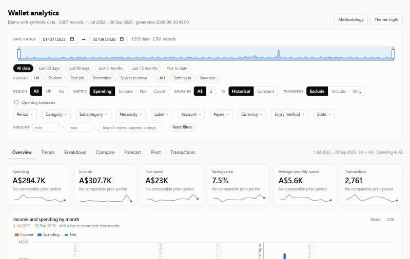
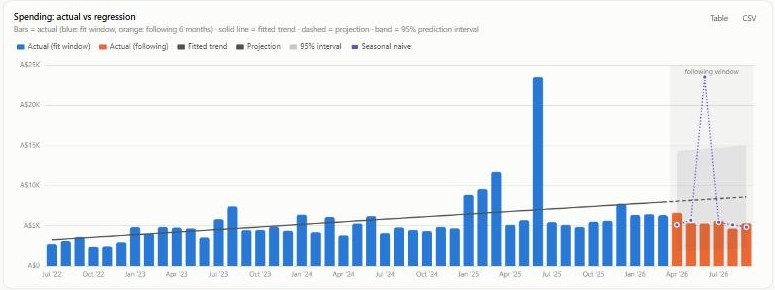

Thousands of transactions across bank accounts, cards and currencies in BudgetBakers Wallet
One self-contained dashboard that filters, compares and forecasts them
Python pulls every record from the Wallet API, converts each one at the exchange rate on its own date, and embeds them all in a single static page.
Every chart has the table behind it, and the forecast is scored against what actually happened.
The problem
Banking apps show one account at a time, in one currency, mostly for this month. I wanted to see how our spending changed when we moved from the UK to Australia, which life events shifted it, and whether a trend was real or just noise. That needs every account in one place, in one currency, sliced any way I like.
How it works

A Python script pulls the accounts, categories and every record from the BudgetBakers Wallet REST API. It converts each record to Australian dollars and pounds twice: at the European Central Bank rate on the transaction's own date, and at today's rate, so currency swings can be switched off. The result is embedded as compact columnar JSON in one HTML file, with no server and no build step.
In the page, dates, region, life periods, category, label, account, payee, currency and more all filter every report. Tabs cover trends, breakdowns, comparisons between any two periods, a pivot table and a forecast. A Refresh button rebuilds it from live data through a small helper on my own computer, so the bank data never leaves it.
How I prove it's right
- Before building any of it, I reconciled the ledger against bank statements, so the dashboard starts from figures that match the banks.
- Every chart has a table view and a CSV export, so any figure can be traced back to the records behind it.
- The forecast is scored against the months that followed its fit window, with MAPE, MAE, RMSE, 95% interval coverage and a seasonal-naive benchmark to beat.
- Before every release of the demo, a script checks each published file against the real ledger's account, payee and label names, so nothing private can slip out.
What it shows

In the demo, a fictional household moves from the UK to Australia. Comparing its life periods per month shows the move clearly: spending jumps in the first months with the rental bond, furniture and a car, while income dips during two months of job hunting, then recovers in the next role.
Run it yourself
git clone https://github.com/holegar/wallet-analytics
cd wallet-analytics
python make_demo.pyThen open index.html in a browser. It needs Python 3.10 or later and nothing else.
Built with
JavaScript and Apache ECharts, Python with only the standard library, the BudgetBakers Wallet REST API, European Central Bank exchange rates, and GitHub Pages.